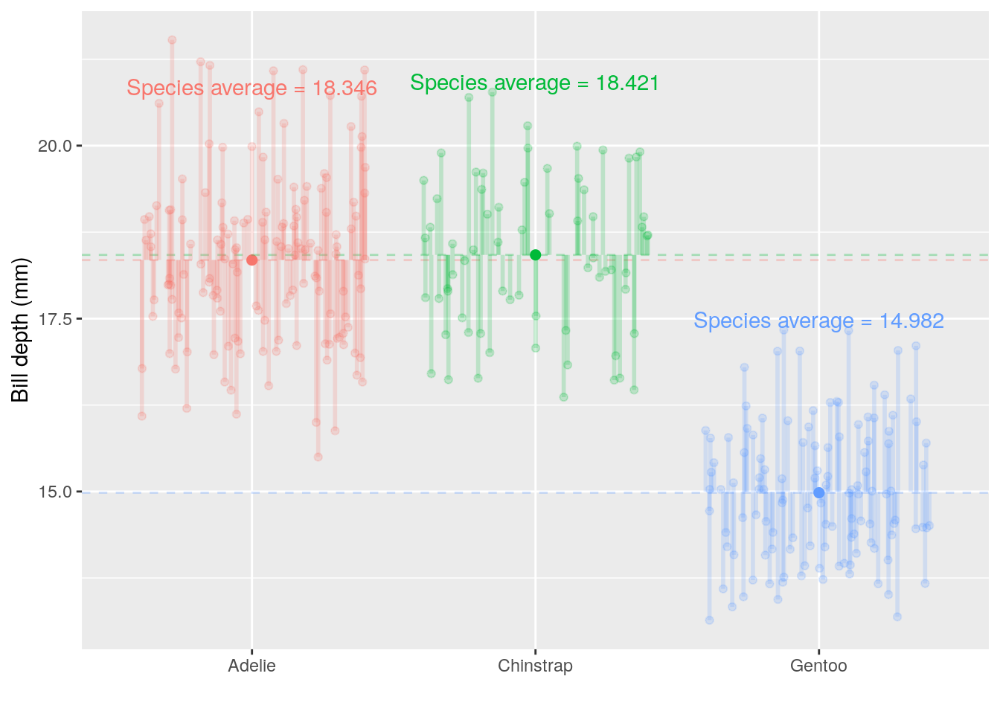
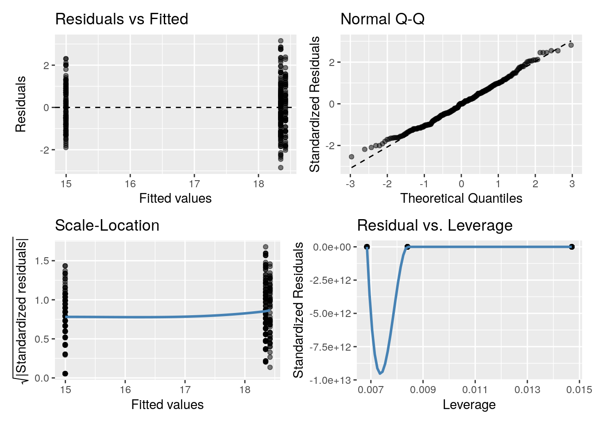

3 Hypothesis testing and introduction to linear regression
3.1 Learning objectives
- Formulate a question/hypothesis to investigate based on the given data
- Explain and discuss the limitations of statistical linear regression, with a single factor explanatory variable
- Interpret and communicate the estimated coefficients of a linear regression model with a single factor explanatory variable to both a statistical and non-statistical audience; discuss and critique model fit
- List the aims, write out the appropriate null and alternative hypothesis using statistical notation for, and write
Rcode to carry out a- one-sample t-test
- two-sample t-test (independent and dependent)
- randomization test
- one-way Analysis of Variance (ANOVA)
- Correctly interpret and communicate a p-value in terms of the hypotheses test listed above
- State in terms of probability statements the meaning of the power and significance level of an hypothesis test
3.2 Introdcution to hypothesis testing
Using the paua.csv data from CANVAS. The P\(\overline{\text{a}}\)ua dataset contains the following variables
Ageof P\(\overline{\text{a}}\)ua in years (calculated from counting rings in the cone)Lengthof P\(\overline{\text{a}}\)ua shell in centimetersSpeciesof P\(\overline{\text{a}}\)ua: Haliotis iris (typically found in NZ) and Haliotis australis (less commonly found in NZ)
## Rows: 60
## Columns: 3
## $ Species <chr> "Haliotis iris", "Haliotis australis", "Haliotis australis", "…
## $ Length <dbl> 1.80, 5.40, 4.80, 5.75, 5.65, 2.80, 5.90, 3.75, 7.20, 4.25, 6.…
## $ Age <dbl> 1.497884, 11.877010, 5.416991, 4.497799, 5.500789, 2.500972, 6…3.2.1 One-Sample t-test
Using a violin plot we can look at the distribution of shell Length. We can calculate the average Length of all shells in our sample
## # A tibble: 1 x 1
## average_length
## <dbl>
## 1 5.19
What about drawing inference? Do we believe that the average length of P\(\overline{\text{a}}\)ua shells is, say, 5cm? We know our sample average, but can we make any claims based on this one number?
How do we reflect our uncertainty about the population mean? (remember it’s the population we want to make inference on based on our sample!) Enter the Standard Error of the Mean, SEM, \(= \frac{\sigma}{\sqrt{n}}\); where \(\sigma = \sqrt{\frac{\Sigma_{i = 1}^n(x_i - \bar{x})^2}{n-1}}\) (\(i = 1,...,n\)) is the standard deviation (SD) of the sample, \(n\) is the sample size, and \(\bar{x}\) is the sample mean.
Calculating \(\Sigma_{i = 1}^n(x_i - \bar{x})^2, i = 1,...,n\) by hand.
It’s the sum squared differences of the distances between the \(i^{th}\) observation and the sample mean \(\bar{x}\) (denoted \(\mu_x\) in the GIF below)

So using the example values in the GIF
## [1] 4.333333## [1] -3.3333333 -2.3333333 -1.3333333 0.6666667 1.6666667 4.6666667## squared distance from mean for each value
squared_distance_from_mean <- distance_from_mean^2
squared_distance_from_mean## [1] 11.1111111 5.4444444 1.7777778 0.4444444 2.7777778 21.7777778## [1] 43.33333Calculating SD and SEM
Now what about the SD? Remember it’s the \(\sqrt{\frac{\Sigma_{i = 1}^n(x_i - \bar{x})^2}{n-1}}\) so = \(\sqrt{\frac{43.3333333}{n-1}}\) = \(\sqrt{\frac{43.3333333}{6-1}}\) = \(\sqrt{\frac{43.3333333}{5}}\) = 2.9439203.
Or we could just use R’s sd() function
## [1] 2.94392So the SEM is \(\frac{\text{SD}}{\sqrt{n}}\) = \(\frac{2.9439203}{\sqrt{6}}\)
In R
## [1] 1.20185For the paua data we can simply use the in-built functions in R to calculate the SEM
## # A tibble: 1 x 2
## mean sem
## <dbl> <dbl>
## 1 5.19 0.155Visualising the uncertainty
Recall that the SEM is a measure of uncertainty about the mean. So we can use it to express our uncertainty visually. Typically \(\pm\) twice the SEM is the interval used:
Why error bars that are \(\pm\) twice the SEM?
This is approximately the 95% confidence interval for the population mean (see lecture)
The exact 95% CI is given by \(\bar{x}\) (mean) \(\pm\) \(t_{df,1 - \alpha/2}\) \(\times\) SEM
- df = degrees of freedom (in this situation df = n - 1)
- \(\alpha\) = level of significance
Each mean has its own confidence interval whose width depends on the SEM for that mean
When the df (more on these later) are large (e.g. 30 or greater) and \(\alpha\) = 0.05 \(t_{df,1 - \alpha/2}\) = \(t_{large,0.975}\) \(\approx\) 2. Hence, the 95% confidence interval for the population mean is approximately \(\bar{x}\) (mean) \(\pm\) 2 \(\times\) SEM
Back to our hypothesis test
Question: Do we believe that the average length of P\(\overline{\text{a}}\)ua shells is 5cm?
Formalizing into a hypothesis test:
- Null hypothesis: On average P\(\overline{\text{a}}\)ua shells are 5cm long
- Alternative hypothesis: On average P\(\overline{\text{a}}\)ua shells are not 5cm long
- Notationally: \(H_0: \mu = 5\) vs \(H_1: \mu \neq 5\) (\(\mu\) is the proposed mean)
Calculating a statistic (we use a t-statistic)
t-statistic \(= \frac{\bar{x}- \mu}{\text{SEM}}\) = \(\frac{5.1925 - 5}{0.155351}\) = 1.239
\(\bar{x}\) is the sample mean
\(\mu\) is the theoretical value (proposed mean)
The corresponding p-value
Q: What is a p-Value?
A: Informally, a p-value is the probability under a specified statistical model that a statistical summary of the data would be equal to or more extreme than its observed value
So in this case it’s the probability, under the null hypothesis (\(\mu = 5\)), that we would observe a statistic as least as extreme as we did.
Under our null hypothesis the distribution of the t-statistic is as below. The one calculated from our hypothesis test was 1.2391. Now, remember that our alternative hypotheses was \(H_1: \mu \neq 5\) so we have to consider both sides of the inequality; hence, anything as least as extreme is either \(> 1.2391\) or \(< -1.2391\) to our observed statistic (vertical lines). Anything as least as extreme is therefore given by the grey shaded areas.

We can calculate the p-value using the pt() function (where q is our calculated t-statistic, and df are the degrees of freedom from above):
## [1] 0.2202152Or we could do all of the above in one step using R
##
## One Sample t-test
##
## data: paua$Length
## t = 1.2391, df = 59, p-value = 0.2202
## alternative hypothesis: true mean is not equal to 5
## 95 percent confidence interval:
## 4.881643 5.503357
## sample estimates:
## mean of x
## 5.1925Recall, that the p-value gives the probability that under our null hypothesis we observe anything as least as extreme as what we did (hence the \(\times 2\), think of the grey shaded area in the graph). This probability is \(\sim\) 22%. Do you think what we’ve observed is likely under the null hypothesis?
Does this plot help? The proposed mean is shown by the red horizontal line; the dashed line shows the sample mean and the dotted lines \(\pm\) the SEM.
3.2.2 Differences between two means

Calculating the differences between species means:
Haliotis australis average - Haliotis iris average = \(\mu_{\text{Haliotis australis}} - \mu_{\text{Haliotis iris}}\) = 5.767 - 4.81 = 0.957. Doesn’t really tell us much…
As above the average values are all well and good, but what about variation? Recall the SEM from the one-sample t-test? The same idea holds here, although the calculation is a little bit more complicated (as we have to think about the number of observations in each group). But from the two group SEMs we can calculate the Standard Error of the Difference between two means, SED.
3.2.2.1 Independent samples t-test with lm() and t.test()
Question: Do we believe that on average the length of P\(\overline{\text{a}}\)ua shells are equal between species
Formalizing into a hypothesis test:
- Null hypothesis: On average the species’ shells are the same length
- Alternative hypothesis: they aren’t!
- Notationally: \(H_0: \mu_{\text{Haliotis iris}} - \mu_{\text{Haliotis australis}} = 0\) vs \(H_1: \mu_{\text{Haliotis iris}} \neq \mu_{\text{Haliotis australis}}\)
+ $\mu_{j}$ is the average length for species $j =$ (*Haliotis iris*, *Haliotis australis*), Calculate the test statistic: t-statistic = \(\frac{\bar{x}_{\text{difference}} - \mu}{\text{SED}}\) = \(\frac{\bar{x}_{\text{difference}} - 0}{\text{SED}}\)
- where \(\bar{x}_{\text{difference}}\) is the differences between the species` averages.
Calculations area a little bit more tricky here so let’s use R. We have two options (both answer our question):
Option 1. using t.test()
##
## Welch Two Sample t-test
##
## data: Length by Species
## t = 3.5404, df = 57.955, p-value = 0.0007957
## alternative hypothesis: true difference in means is not equal to 0
## 95 percent confidence interval:
## 0.4158802 1.4980086
## sample estimates:
## mean in group Haliotis australis mean in group Haliotis iris
## 5.766667 4.809722## [1] 0.0007956853Listed are the t-statistic, t = 3.5403636 and the p-value, p-value = 7.956853310^{-4} for the hypothesis test outlined above. What would you conclude?
Option 2. using lm()
## Estimate Std. Error t value Pr(>|t|)
## (Intercept) 5.7666667 0.2278199 25.312396 4.911173e-33
## SpeciesHaliotis iris -0.9569444 0.2941142 -3.253649 1.902460e-03So, what are the printed values?
Inference
(Intercept) = the baseline = \(\mu_\text{Haliotis australis}\) = 5.7666667
SE of (Intercept) = SE of \(\mu_\text{Haliotis australis}\) = SEM = 0.2278199
\(\text{SpeciesHaliotis iris}\) = \(\mu_\text{Haliotis iris}\) – \(\mu_\text{Haliotis australis}\) = -0.9569444
SE of \(\text{SpeciesHaliotis iris}\) = SE of (\(\mu_\text{Haliotis iris}\) – \(\mu_\text{Haliotis australis}\) ) = SED = 0.2941142
Hypotheses being tested
The
t valueandPr (>|t|)are the t - and p-value for testing the null hypotheses:- Mean abundance is zero for Haliotis australis (not interested in this really)
- No difference between the population means of Haliotis australis and Haliotis iris
## changing the baseline
## it's the ordering that makes the difference
paua_rl <- paua %>% mutate(Species = fct_relevel(Species, "Haliotis iris", "Haliotis australis"))
c.lm <- lm(Age ~ Species, data = paua_rl)
summary(c.lm)##
## Call:
## lm(formula = Age ~ Species, data = paua_rl)
##
## Residuals:
## Min 1Q Median 3Q Max
## -2.9050 -0.9227 -0.0752 0.5973 5.5988
##
## Coefficients:
## Estimate Std. Error t value Pr(>|t|)
## (Intercept) 4.4029 0.2659 16.560 < 2e-16 ***
## SpeciesHaliotis australis 3.1431 0.4204 7.477 4.63e-10 ***
## ---
## Signif. codes: 0 '***' 0.001 '**' 0.01 '*' 0.05 '.' 0.1 ' ' 1
##
## Residual standard error: 1.595 on 58 degrees of freedom
## Multiple R-squared: 0.4908, Adjusted R-squared: 0.482
## F-statistic: 55.9 on 1 and 58 DF, p-value: 4.631e-10Inference
(Intercept) = the baseline = \(\mu_\text{Haliotis iris}\) = 4.4028662
SE of (Intercept) = SE of \(\mu_\text{Haliotis iris}\) = SEM = 0.26587
\(\text{SpeciesHaliotis australis}\) = \(\mu_\text{Haliotis australis}\) – \(\mu_\text{Haliotis iris}\) = 3.1430733
SE of \(\text{SpeciesHaliotis australis}\) = SE of (\(\mu_\text{Haliotis australis}\) – \(\mu_\text{Haliotis iris}\) ) = SED = 0.4203774
Hypotheses being tested
The
t valueandPr (>|t|)are the t - and p-value for testing the null hypotheses:- Mean abundance is zero for Haliotis iris (not interested in this really)
- No difference between the population means of Haliotis iris and Haliotis australis
3.3 üò± Correctly interpreting p-values üò±
“Good statistical practice, as an essential component of good scientific practice, emphasizes principles of good study design and conduct, a variety of numerical and graphical summaries of data, understanding of the phenomenon under study, interpretation of results in context, complete reporting and proper logical and quantitative understanding of what data summaries mean. No single index should substitute for scientific reasoning.”
What is a p-Value?
Informally, a p-value is the probability under a specified statistical model that a statistical summary of the data (e.g., the sample mean difference between two compared groups) would be equal to or more extreme than its observed value.
Note
p-values can indicate how incompatible the data are with a specified statistical model
p-values do not measure the probability that the studied hypothesis is true, or the probability that the data were produced by random chance alone
scientific conclusions and business or policy decisions should not be based only on whether a p-value passes a specific threshold
proper inference requires full reporting and transparency
p-value, or statistical significance, does not measure the size of an effect or the importance of a result
by itself, a p-value does not provide a good measure of evidence regarding a model or hypothesis
3.3.1 The ASA Statement on p-Values: Context, Process, and Purpose
Q: Why do so many colleges and grad schools teach p-val=0.05?
A: Because that‚Äôs still what the scientific community and journal editors use. üò± BUT IT SHOULDN‚ÄôT BE üò±
Q: Why do so many people still use p-val=0.05?
A: Because that‚Äôs what they were taught in college or grad school. üò±BUT THEY SHOULDN‚ÄôT BEüò±
There are many different schools of thought about how a p-value should be interpreted.
Most people agree that the p-value is a useful measure of the strength of evidence against the null hypothesis. The smaller the p-value, the stronger the evidence against \(H_0\).
Some people go further and use an accept/reject framework. Under this framework, the null hypothesis \(H_0\) should be rejected if the p-value is less than 0.05 (say), and accepted if the p-value is greater than 0.05.
In this course we mostly use the strength of evidence interpretation.: The p-value measures how far out our observation lies in the tails of the distribution specified by \(H_0\).
Substantial evidence of a difference, not Evidence of a substantial difference.
3.4 Power, Significance, and multiple comparisons
Recall, we have two competing hypotheses (claims) relating to the true vale of some population characteristic (e.g., the population mean, denoted \(\mu\)):
Some terminology
Type I error (false positive): declare a difference (i.e., reject \(H_0\)) when there is no difference (i.e. \(H_0\) is true). Risk of the Type I error is determined by the level of significance (which we set!) (i.e., \(\alpha =\text{ P(Type I error)} = \text{P(false positive)}\).

Artwork by @allison_horst
Type II error (false negative): difference not declared (i.e., \(H_0\) not rejected) when there is a difference (i.e., \(H_0\) is false). Let \(\beta =\) P(do not reject \(H_0\) when \(H_0\) is false); so, \(1-\beta\) = P(reject \(H_0\) when \(H_0\) is false) = P(a true positive), which is the statistical power of the test.

Artwork by @allison_horst
Significance level = probability of a Type I error = probability of finding an effect that is not there (false positive).
Power: the probability that the test correctly rejects the null hypothesis when the alternative hypothesis is true. probability of finding an effect that is there = 1 - probability of a Type II error (false negative).
Reducing the chance of a Type I error increases the chance of a Type II error. They are inversely related. Type II error rate is determined by a combination of the following.
- Effect size (size of difference, of biological significance) between the true population parameters
- Experimental error variance
- Sample size
- Choice of Type I error rate (\(\alpha\))
Each time we carry out a hypothesis test the probability we get a false positive result (Type I error) is given by \(\alpha\) (the level of significance we choose).
When we have multiple comparisons to make we should then control the Type I error rate across the entire family of tests under consideration, i.e., control the Family-Wise Error Rate (FWER); this ensures that the risk of making at least one Type I error among the family of comparisons in the experiment is \(\alpha\).
3.5 Randomization test
The basic approach to randomization tests is straightforward:
- Decide on a metric to measure the effect in question (e.g., differences between group means)
- Calculate that test statistic on the observed data. Note this metric can be anything you wish
- For chosen number of times (i.e.,
nrepsbelow)- Shuffle the data labels
- Calculate the test statistic for the reshuffled data and retain
- Calculate the proportion of times your reshuffled statistics equal or exceed the observed
- typically here we use the absolute values as we’d be carrying out a two-tailed test (or we could double the p-value)
- this is the probability of such an extreme result under the null
- State the strength of evidence against the null on the basis of this probability.
Randomization Test on Two Independent Samples
Do average lengths differ between Species?
means <- paua %>% group_by(Species) %>% summarise(means = mean(Length))
ggplot(paua,aes(x = Species, y = Length)) +
geom_violin() +
geom_point(alpha = 0.4) +
ylab("Length (cms)") + xlab("") +
theme_classic() +
geom_point(data = means, aes(x = Species, y = means, color = Species), size = 2) +
geom_hline(data = means, aes(yintercept = means, color = Species), lty = 2, alpha = 0.5) +
theme(legend.position = "none") +
geom_text(data = means, aes(x = Species, y = means + 0.3, label = paste0("Species averege = ",round(means,3)), color = Species))ggplot(paua,aes(x = Length, fill = Species)) +
geom_histogram(position = "identity", alpha = 0.3) +
xlab("Length (cms)") + ylab("") +
theme_classic()## `stat_bin()` using `bins = 30`. Pick better value with `binwidth`.
But because the data are skewed and we’ve likely got non-constant variances we may be better off adopting a randomization test, rather than a parametric t-test
## observed differences in means
diff_in_means <- (paua %>% group_by(Species) %>% summarise(mean = mean(Length)) %>% summarise(diff = diff(mean)))$diff
diff_in_means## [1] -0.9569444## Number of times I want to randomise
nreps <- 1000
## initialize empty array to hold results
randomisation_difference_mean <- numeric(nreps)
set.seed(1234) ## *****Remove this line for actual analyses*****
## This means that each run with produce the same results and
## agree with the printout that I show.
for (i in 1:nreps) {
## the observations
data <- data.frame(value = paua$Length)
## randomise labels
data$random_labels <-sample(paua$Species, replace = FALSE)
## randomised differences in mean
randomisation_difference_mean[i] <- (data %>% group_by(random_labels) %>% summarise(mean = mean(value)) %>% summarise(diff = diff(mean)))$diff
}
## results
results <- data.frame(randomisation_difference_mean = randomisation_difference_mean)Interpreting p-values for a randomisation test
## How many randomised differences in means are as least as extreme as the one we observed
## absolute value as dealing with two tailed
n_exceed <- sum(abs(results$randomisation_difference_mean) >= abs(diff_in_means))
n_exceed## [1] 1## [1] 0.001ggplot(results, aes(x = randomisation_difference_mean)) +
geom_histogram() +
theme_classic() + ylab("") + xlab("Differences between randomised group means") +
geom_vline(xintercept = diff_in_means, col = "cyan4", size = 1,alpha = 0.6) +
annotate(geom = 'text', label = "Observed difference between means" ,
x = -Inf, y = Inf, hjust = 0, vjust = 1.5, color = "cyan4")## `stat_bin()` using `bins = 30`. Pick better value with `binwidth`.
How would the parametric t-test have served?
##
## Welch Two Sample t-test
##
## data: Length by Species
## t = 3.5404, df = 57.955, p-value = 0.0007957
## alternative hypothesis: true difference in means is not equal to 0
## 95 percent confidence interval:
## 0.4158802 1.4980086
## sample estimates:
## mean in group Haliotis australis mean in group Haliotis iris
## 5.766667 4.809722Not too different after all
Note
- In experimental situations a large p-value (large tail proportion) means that the luck of the randomisation quite often produces group differences as large or even larger than what we’ve got in our data.
- A small p-value means that the luck of the randomisation draw hardly ever produces group differences as large as we’ve got in our data.
- Statistical significance does not imply practical significance.
- Statistical significance says nothing about the size of treatment differences. To estimate the sizes of differences you need confidence intervals.
NOTE: We can extend the randomization test to make inference about any sample statistic (not just the mean)
3.6 One way ANOVA using lm()

Remember the penguins? You might find this application useful, now and later…

Now we have more than two groups: \(3\) potential comparisons we might be interested in. Remember that each time we carry out a hypothesis test the probability we get a false positive result (Type I error) is given by \(\alpha\) (the level of significance we choose). In light of this we should control the Type I error rate across the entire family of tests under consideration, i.e., control the Family-Wise Error Rate (FWER); this ensures that the risk of making at least one Type I error among the family of comparisons in the experiment is \(\alpha\).
ANalysis Of VAriance (ANOVA): this can, again, be done using lm()
F-test using anova()
## Analysis of Variance Table
##
## Response: bill_depth_mm
## Df Sum Sq Mean Sq F value Pr(>F)
## species 2 870.79 435.39 344.83 < 2.2e-16 ***
## Residuals 330 416.67 1.26
## ---
## Signif. codes: 0 '***' 0.001 '**' 0.01 '*' 0.05 '.' 0.1 ' ' 1Consider the ratio \({\frac {{\text{variation due to groups}}}{{\text{unexplained variance}}}} = {\frac {{\text{ mean between-group variability}}}{{\text{mean within-group variability}}}}\) \(=\frac{\text{mean SSB}}{\text{mean SSW}}\) \(=\frac{\text{MSB}}{\text{MSW}}\) = \(\frac{435.3925914}{1.2626477}\)
This is the F-statistic…
Hypothesis: We test the Null hypothesis, \(H_0\), population (species) means are the same on average verses the alternative hypothesis, \(H_1\), that at least one differs from the others!
Probability of getting an F-statistic at least as extreme as the one we observe (think of the area under the tails of the curve below) p-value Pr(>F)= 1.446615710^{-81} tells us we have extremely strong evidence against \(H_0\) at the <<0.0001% level of significance
F-test using aov()
## Df Sum Sq Mean Sq F value Pr(>F)
## species 2 870.8 435.4 344.8 <2e-16 ***
## Residuals 330 416.7 1.3
## ---
## Signif. codes: 0 '***' 0.001 '**' 0.01 '*' 0.05 '.' 0.1 ' ' 1They are BOTH THE SAME
Taking species Adelie as the baseline in linear regression…
## Estimate Std. Error t value Pr(>|t|)
## (Intercept) 18.34726027 0.09299608 197.2906740 0.000000e+00
## speciesChinstrap 0.07332796 0.16497460 0.4444803 6.569867e-01
## speciesGentoo -3.35062162 0.13877592 -24.1441135 6.622121e-75(Intercept) = \(\text{mean}_{\text{Adelie}}\) = 18.3472603
SE of (Intercept) = SE of \(\text{mean}_{\text{Adelie}}\) = SEM = 18.3472603
\(\text{speciesChinstrap}\) = \(\text{mean}_{\text{Chinstrap}}\) - \(\text{mean}_{\text{Adelie}}\) = 0.073328
SE of \(\text{speciesChinstrap}\) = SE of (\(\text{mean}_{\text{Chinstrap}}\) - \(\text{mean}_{\text{Adelie}}\) ) = SED = 0.1649746
What is \(\text{mean}_{\text{Gentoo}}\) - \(\text{mean}_{\text{Adelie}}\)?
Hypotheses being tested
The
t valueandPr (>|t|)are the t - and p-value for testing the null hypotheses- Mean abundance is zero for Adelie population
- No difference between the population means of Chinstrap and Adelie
- No difference between the population means of Gentoo and Adelie
We’re interested in 2 and 3, but not necessarily 1!
What do you conclude? Does your inference match the plot?
3.7 Model diagnostics
Carrying out any linear regression we have some key assumptions
- Independence
- There is a linear relationship between the response and the explanatory variables
- The residuals have constant variance
- The residuals are normally distributed
Diagnostic plots

Residuals vs Fitted plot
You are basically looking for no pattern or structure in your residuals (e.g., a “starry” night). You definitely don’t want to see is the scatter increasing around the zero line (dashed line) as the fitted values get bigger (e.g., think of a trumpet, a wedge of cheese, or even a slice of pizza) which would indicate unequal variances (heteroscedacity).
[Note: things look a bit weird, points are in clumps? Why? Well think of the model we fitted (i.e., one with a single factor explanatory variable)]
Normal quantile-quantile (QQ) plot
This plot shows the sorted residuals versus expected order statistics from a standard normal distribution. Samples should be close to a line; points moving away from 45 degree line at the tails suggest the data are from a skewed distribution.
Scale-Location plot (\(\sqrt{\text{|standardized residuals vs Fitted|}}\))
Another way to check the homoskedasticity (constant-variance) assumption. We want the line to be roughly horizontal. If this is the case then the average magnitude of the standardized residuals isn’t changing much as a function of the fitted values. We’d also like the spread around the line not to vary much with the fitted values; then the variability of magnitudes doesn’t vary much as a function of the fitted values.
Residuals vs Leverage plot (standardized residuals vs Leverage)
This can help detect outliers in a linear regression model. For linear regression model leverage measures how sensitive a fitted value is to a change in the true response. We’re looking at how the spread of standardized residuals changes as the leverage. This can also be used to detect heteroskedasticity and non-linearity: the spread of standardized residuals shouldn’t change as a function of leverage. In addition, points with high leverage may be influential: that is, deleting them would change the model a lot.
[Note: things look a bit weird: there are only three points? Why? Well think of the model we fitted (i.e., one with a single factor explanatory variable). We can’t tell much here, bu twill use these plots more later on.]
3.8 Other resources: optional but recommended
I thought it could be helpful to have a thread on ANOVA in R. As a statistical consultant, this is the most frequent FAQ I get from clients - how to run a linear model on their data, conduct hypothesis tests, extract predicted means and perform contrasts.
— We are R-Ladies (@WeAreRLadies) February 2, 2020
I've made this cheat sheet and I think it's important. Most stats 101 tests are simple linear models - including “non-parametric” tests. It's so simple we should only teach regression. Avoid confusing students with a zoo of named tests. https://t.co/9PFR1ly3lW 1/n
— Jonas K. Lindeløv (@jonaslindeloev) March 27, 2019
The aov() function in #Rstats is actually a wrapper around the lm() function pic.twitter.com/FbvxQdtD4c
— Dan Quintana (@dsquintana) October 30, 2019